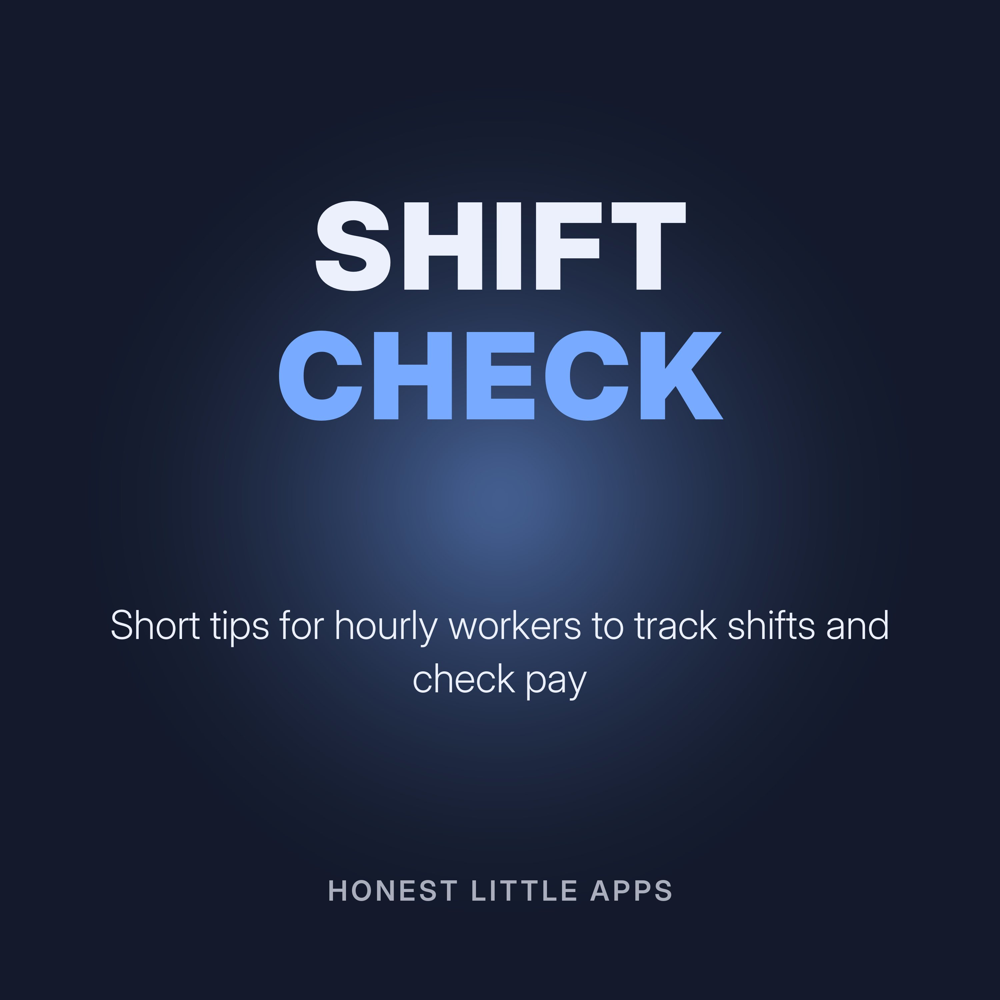

Shift Check: Know Your Pay
Short episodes for hourly and shift workers: keeping your own record of hours, understanding your pay statement, and spotting mistakes early. General information, not legal or tax advice; rules vary by location and employer.
Made by Honest Little Apps, the makers of EarnCheck: Shift & Pay Tracker, an iPhone app to keep your own record of shifts, estimate gross pay and compare it with your pay statement. Narrated with a synthetic (text-to-speech) voice.
- Keep your own recordYour employer keeps a record of your hours. It helps to keep your own too.
- Read your pay statementA pay statement usually shows hours, rate, gross pay, deductions and net pay.
- Overtime basicsIn many places, hours over a certain limit are paid at a higher rate.
- When something doesn't matchIf your pay doesn't match your hours, start calmly and with facts.
- Tips and extra shiftsIf you earn tips or pick up extra shifts, record them the same day.